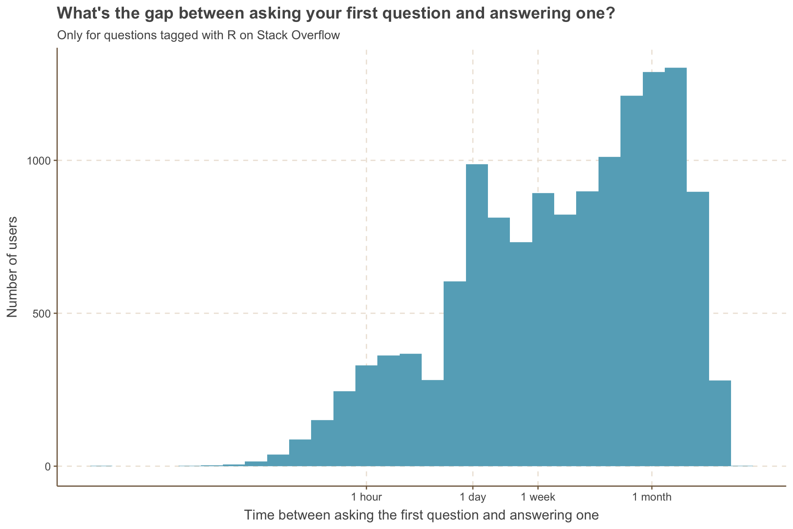
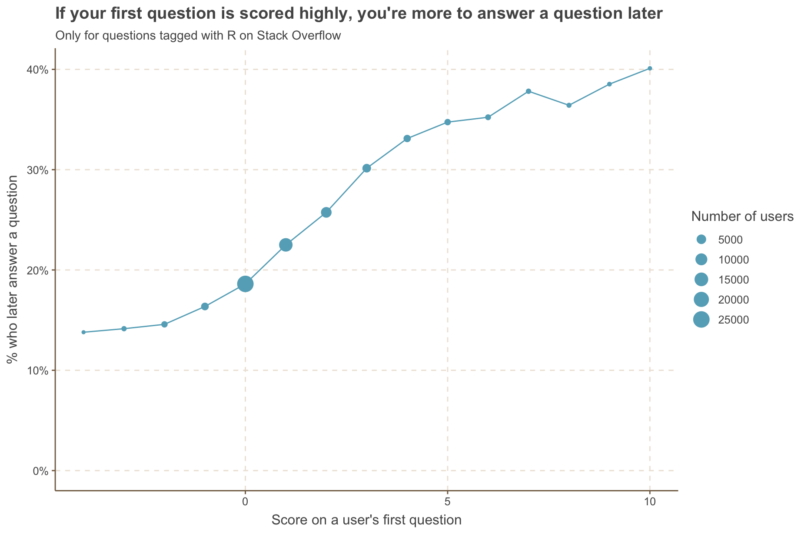
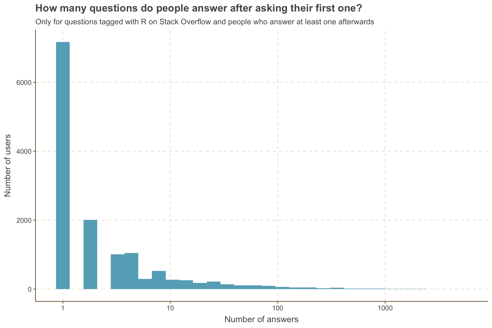

Bradyn Trollip Have you ever had a “first this then that” question? For example, maybe you’re an e-commerce business and you want all the times people clicked on an item and then added it to their cart within 2 days, or the last page they visited before registering. Or you work with pharmaceutical data and need to know what drugs people took before drug x and which drugs they took afterward and when. Or you tag fish and need to know where they went and if they eventually migrated upstream.
Enter the funneljoin package. The goal of funneljoin is to make it easy to analyze behavior funnels with the after_join(), funnel_start(), and funnel_step() functions. If you work with data where you have events with their time and associated user, you probably have a problem funneljoin can help with. I created this package with David Robinson and Anthony Baker in July 2018 and have continued to maintain and build on it since.
In this post, I’ll use funneljoin::after_join() to analyze data about all Stack Overflow questions and answers with the tag R up to September 24th, 2017. The data was downloaded from Kaggle here. The next post in this series will look at the funnel_start() and funnel_step() functions, which we’ll use when all of the events or behavior are in one table.
Set-up
library(tidyverse)
answers <- read_csv("Answers.csv")
questions <- read_csv("Questions.csv")funneljoin is on CRAN, so you can install it as you would any CRAN package.
# install.packages("funneljoin")
library(funneljoin)Let’s take a quick look at the questions and answers data set.
questions# A tibble: 189,930 × 6
Id OwnerUserId CreationDate Score Title Body
<dbl> <dbl> <dttm> <dbl> <chr> <chr>
1 77434 14008 2008-09-16 21:40:29 171 How to access the last va… "<p>…
2 79709 NA 2008-09-17 03:39:16 3 Worse sin: side effects o… "<p>…
3 95007 15842 2008-09-18 17:59:19 56 Explain the quantile() fu… "<p>…
4 103312 NA 2008-09-19 16:09:26 4 How to test for the EOF f… "<p>…
5 255697 1941213 2008-11-01 15:48:30 4 Is there an R package for… "<p>…
6 359438 2173 2008-12-11 14:02:06 4 Optimization packages for… "<p>…
7 439526 37751 2009-01-13 15:58:48 23 Thinking in Vectors with R "<p>…
8 445059 37751 2009-01-14 23:09:02 12 Vectorize my thinking: Ve… "<p>…
9 467110 11301 2009-01-21 21:33:13 5 Is R a compiled language? "<p>…
10 476726 277 2009-01-24 21:56:23 10 Filtering data in R "<p>…
# … with 189,920 more rows
# ℹ Use `print(n = ...)` to see more rowsanswers # A tibble: 250,788 × 7
Id OwnerUserId CreationDate ParentId Score IsAcceptedAnswer Body
<dbl> <dbl> <dttm> <dbl> <dbl> <lgl> <chr>
1 79741 3259 2008-09-17 03:43:22 79709 -1 FALSE "<p>It…
2 79768 6043 2008-09-17 03:48:29 79709 9 FALSE "<p>us…
3 79779 8002 2008-09-17 03:49:36 79709 0 FALSE "<p>Th…
4 79788 NA 2008-09-17 03:51:30 79709 4 FALSE "<p>It…
5 79827 14257 2008-09-17 03:58:26 79709 1 FALSE "<p>I'…
6 79893 14928 2008-09-17 04:11:08 79709 6 FALSE "<p>Re…
7 83162 15842 2008-09-17 13:27:17 77434 70 FALSE "<p>If…
8 83222 1428 2008-09-17 13:32:45 77434 236 FALSE "<p>I …
9 86804 NA 2008-09-17 19:39:37 79709 1 FALSE "<p>FY…
10 95598 1179 2008-09-18 18:49:09 95007 5 FALSE "<p>Th…
# … with 250,778 more rows
# ℹ Use `print(n = ...)` to see more rowsBefore I dive into the analysis, I’m going to use the janitor’s package clean_names() function to convert the column names to snake case. I’ll also get rid of the rows where user id is missing.
questions <- questions %>%
janitor::clean_names() %>%
filter(!is.na(owner_user_id))
answers <- answers %>%
janitor::clean_names() %>%
filter(!is.na(owner_user_id))after_join()
Let’s start with a relatively simple question - how many people who ask a question later answer one? To look at this, we’ll need to link the questions with the answers table using owner_user_id and creation_date using funneljoin’s after_join function.
first_answer_after_first_question <- questions %>%
after_left_join(answers,
by_time = "creation_date",
by_user = "owner_user_id",
type = "first-firstafter",
suffix = c("_question", "_answer"))
first_answer_after_first_question# A tibble: 60,335 × 12
id_question owner_user_id creation_date_quest…¹ score…² title body_…³ id_an…⁴
<dbl> <dbl> <dttm> <dbl> <chr> <chr> <dbl>
1 77434 14008 2008-09-16 21:40:29 171 How … "<p>Su… NA
2 95007 15842 2008-09-18 17:59:19 56 Expl… "<p>I'… 4249121
3 255697 1941213 2008-11-01 15:48:30 4 Is t… "<p>I'… NA
4 359438 2173 2008-12-11 14:02:06 4 Opti… "<p>Do… NA
5 439526 37751 2009-01-13 15:58:48 23 Thin… "<p>I … 440066
6 467110 11301 2009-01-21 21:33:13 5 Is R… "<p>I … NA
7 476726 277 2009-01-24 21:56:23 10 Filt… "<p>I … 4727309
8 495744 12677 2009-01-30 14:48:19 2 Oper… "<p>I … 2203628
9 498932 445 2009-01-31 14:50:28 3 What… "<p>I … 511763
10 520810 63372 2009-02-06 15:49:48 20 Does… "<p>An… NA
# … with 60,325 more rows, 5 more variables: creation_date_answer <dttm>,
# parent_id <dbl>, score_answer <dbl>, is_accepted_answer <lgl>,
# body_answer <chr>, and abbreviated variable names ¹creation_date_question,
# ²score_question, ³body_question, ⁴id_answer
# ℹ Use `print(n = ...)` to see more rows, and `colnames()` to see all variable namesThe first two arguments are the tables we’re joining, with the first table being the events that happen first. We then specify:
by_time: the time columns in each table. This would typically be a datetime or a date column. These columns are used to filter for time y being after time x.by_user: the user or identity columns in each table. These must always be identical for a pair of rows to match.type: the type of funnel used to distinguish between event pairs, such as “first-firstafter”, first-first”, “last-first”, “any-firstafter”.suffix: just like dplyr’s join functions, this specifies what should be appended to the names of columns that are in both tables.
The type argument is the most powerful one, as it allows you to switch between types of funnels easily. In this case, we wanted only the first question someone asked and then wanted to know the first answer they gave afterward.
For any type of after_join(), the timestamps of the second table (in this case answers) will always be after the timestamp of the first table for each user - we can see there are no rows where creation_date_answer is before creation_date_question:
first_answer_after_first_question %>%
filter(creation_date_answer < creation_date_question)# A tibble: 0 × 12
# … with 12 variables: id_question <dbl>, owner_user_id <dbl>,
# creation_date_question <dttm>, score_question <dbl>, title <chr>,
# body_question <chr>, id_answer <dbl>, creation_date_answer <dttm>,
# parent_id <dbl>, score_answer <dbl>, is_accepted_answer <lgl>,
# body_answer <chr>
# ℹ Use `colnames()` to see all variable namesTo answer our original question, let’s get a count by what percent of rows don’t have an id_answer, meaning they never answered a question after asking one. We’ll use the funneljoin’s summarize_conversions() function, where you specify what column indicates whether someone “converted” (in this case answered a question) and returns the total number of users (nb_users), the number of conversions (nb_conversions), and the percent converted (pct_converted).
first_answer_after_first_question %>%
summarize_conversions(converted = id_answer)# A tibble: 1 × 3
nb_users nb_conversions pct_converted
<int> <int> <dbl>
1 60335 13688 0.227We see that of the approximately 60,000 users that asked an R question, 22.7% percent later went on to answer one.
How long does it take for people to answer their first question? We can add gap_col = TRUE to after_join() to add a column, .gap, which is the gap between events (in seconds).
time_between_first_question_and_answer <- questions %>%
after_left_join(answers,
by_time = "creation_date",
by_user = "owner_user_id",
type = "first-firstafter",
gap_col = TRUE) %>%
mutate(gap_hours = .gap / 3600)
time_between_first_question_and_answer %>%
ggplot(aes(x = gap_hours)) +
geom_histogram() +
scale_x_log10(breaks = c(1, 24, 24 * 7, 24 * 7 * 30),
labels = c("1 hour", "1 day", "1 week", "1 month")) +
labs(x = "Time between asking the first question and answering one",
y = "Number of users",
title = "What's the gap between asking your first question and answering one?",
subtitle = "Only for questions tagged with R on Stack Overflow") 
We can get an idea from this graph what percentage of people who ask a question answer one within a week, or we could filter our data to get an exact answer. To make it even easier though, we can use the max_gap argument in after_join() to specify that someone needs to have answered a question within a week from their data to be joined. max_gap takes either a difftime or an integer representing the gap in seconds and will filter so that the time between events is less than or equal to that max_gap.
questions %>%
after_join(answers,
by_time = "creation_date",
by_user = "owner_user_id",
type = "first-firstafter",
mode = "left",
suffix = c("_question", "_answer"),
max_gap = as.difftime(1, units = "weeks")) %>%
summarize_conversions(converted = id_answer)# A tibble: 1 × 3
nb_users nb_conversions pct_converted
<int> <int> <dbl>
1 60335 5349 0.0887Now we see that only 8.9% answer an R question within a week of asking their first one.
We might be curious if the likelihood of answering a question later varies by the score of the question they asked. Before doing summarize_conversions, we can group by the score. There are some scores that only appear once (e.g. one person got a score of -18), so we’ll filter for only scores between -4 and 10.
first_answer_after_first_question %>%
group_by(score_question) %>%
summarize_conversions(converted = id_answer) %>%
filter(between(score_question, -4, 10)) %>%
ggplot(aes(x = score_question, y = pct_converted)) +
geom_line() +
geom_point(aes(size = nb_users)) +
scale_y_continuous(labels = scales::percent) +
labs(y = "% who later answer a question",
x = "Score on a user's first question",
title = "If your first question is scored highly, you're more to answer a question later",
subtitle = "Only for questions tagged with R on Stack Overflow",
size = "Number of users") +
expand_limits(y = 0)
Most people’s first questions have a score between -1 and 4, but for those who manage to score higher, they’re more likely to answer a question later. As always, you have to be careful of any claims of causality: it’s likely be those who are asking higher scored questions are better at R and thus have the knowledge to later provide answers.
Other joins and funnel types
We’ve been looking so far at people’s answers after they’ve asked a question. But are there people who answer a question before they ever ask one?
We can examine this by changing the join to:
first-firsttype to filter both tables to the first instance of a user (e.g. their first answer and their first question).after_right_jointo keep everyone who asks a question, whether or not they ever answered any before.
answers %>%
after_right_join(questions,
by_time = "creation_date",
by_user = "owner_user_id",
type = "first-first",
suffix = c("_answer", "_question")) %>%
summarize_conversions(converted = id_answer)# A tibble: 1 × 3
nb_users nb_conversions pct_converted
<int> <int> <dbl>
1 60335 2795 0.0463Yes, 4.63% of people have answered a question before they asked their first one.
For people who answer questions after asking one, let’s find out how many they answer. We’ll switch our query to an after_inner_join with a type first-any. Each user will only have one question, their first, as we used a first-Y type. But it has one row per answer they gave afterwards as we used a X-any type.
questions %>%
after_inner_join(answers,
by_time = "creation_date",
by_user = "owner_user_id",
type = "first-any") %>%
count(owner_user_id) %>%
ggplot(aes(n)) +
geom_histogram() +
scale_x_log10() +
labs(x = "Number of answers",
y = "Number of users",
title = "How many questions do people answer after asking their first one?",
subtitle = "Only for questions tagged with R on Stack Overflow and people who answer at least one afterwards")
Not surprisingly, we see people mostly answer only 1 or 2 questions, with a long tail of power users answering 100+ questions.
Conclusion
Some of the power of funneljoin comes from making it possible to code things you didn’t know how to before. But a lot of it comes from bringing things from “possible but time-consuming and error-prone” to “easy.” When you’re doing exploratory analysis, you want to be able to iterate quickly between ideas: switching from the first thing someone added to their cart after searching for an item, to everything they added, to only items they added within a week.
In the next post, I’ll be sharing funneljoin’s other main functions: funnel_start() and funnel_step(). In the meantime, if you find any bugs or have a feature request or question, please create an issue on GitHub or get in touch on Twitter!